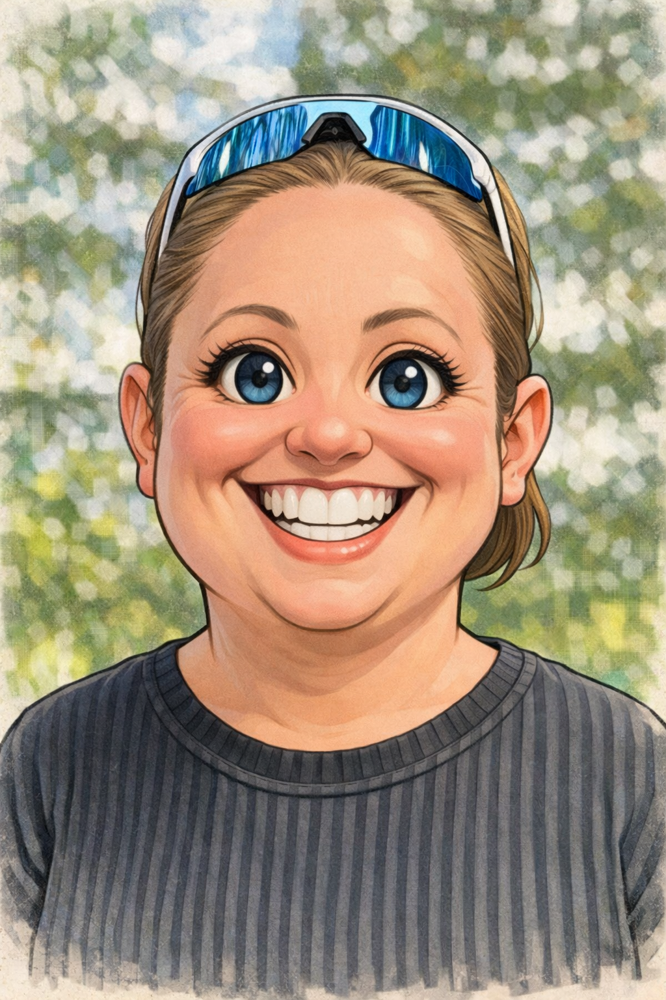

Hi! I’m Trine — a nature‑loving preschool teacher with nearly 15 years of experience guiding curious little humans through forests, fields, and muddy adventures. My professional roots are firmly planted in outdoor education and outdoor life, where fresh air and messy hands are part of the job description.
Somewhere along the trail, though, I developed a growing fascination for the digital world — especially how we can protect ourselves in it. That curiosity led me back to school, where I’m now studying cybersecurity. I’m particularly interested in how we can safeguard our digital lives, both privately and professionally, without losing our sanity in the process.
When I’m not studying or working, you’ll most likely find me outdoors: hiking in the mountains, paddling on the sea, or simply wandering with a camera in hand. I’m a hobby photographer with a soft spot for nature shots — no fancy equipment, just enthusiasm and a good eye for light.
And this website is part of my ongoing learning journey — a place where I experiment with code, explore new ideas, and try to make sense of the digital world one line at a time. And if there’s one thing I’ve learned so far, it’s that the best journeys happen when curiosity leads the way.
Feel free to follow me on social media: